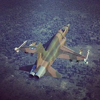
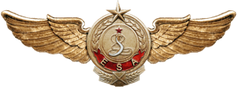

| Aviones Modernos | Aviones WWII | Helicopteros |
|---|---|---|
| A-10C Watrhog | P-51D Mustang | UH-1H Huey |
| SU-25 Frogfoot | BF-109 | Mi-17 Hip |
| F-15 Eagle | FW-190 | Gazelle |
| F-18 Hornet (En producción) | Spitfire | BO-105 (En producción) |
Este es el simulador que nos ha puesto en contacto a los aficionados a la simulación aérea de combate. Proporciona modelos replicados hasta el más mínimo detalle, y permite recrear procedimientos y técnicas tanto de vuelo como de combate aire-aire y aire-tierra. El grado de simulación es muy alto y, con el empleo de pedales, palanca de gases, joystick y últimamente gafas de realidad virtual (Oculus Rift o HTC Vive), el grado de inmersión es total.
Digital Combat SimulatorEsta es una web de un skinner que realiza preferentemente skins españoles para los modelos de DCS World. Actualmente está un poco parado por trabajo y estudios, pero no está desaparecido.
 DCSSKINS by mbendi1Escuadrón de referencia en España, con mucha solera y experiencia. Si lo que quieres es llevar la simulación a lo más real posible, esta es tu familia.
 Escuadrón Cruz de San Andrés